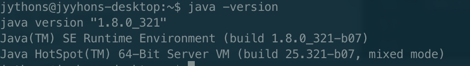

MySQL类型与Java类型对应转换
https://blog.csdn.net/java_2017_csdn/article/details/80910223
| 类型名称 | 显示长度 | 数据库类型 | JAVA类型 | JDBC类型索引（int） |
|---|---|---|---|---|
| VARCHAR | L+N | VARCHAR | java.lang.String | 12 |
| CHAR | N | CHAR | java.lang.String | 1 |
| BLOB | L+N | BLOB | java.lang.byte[] | -4 |
| TEXT | 65535 | VARCHAR | java.lang.String | -1 |
| INTEGER | 4 | INTEGER UNSIGNED | java.lang.Long | 4 |
| TINYINT | 3 | TINYINT UNSIGNED | java.lang.Integer | -6 |
| SMALLINT | 5 | SMALLINT UNSIGNED | java.lang.Integer | 5 |
| MEDIUMINT | 8 | MEDIUMINT UNSIGNED | java.lang.Integer | 4 |
| BIT | 1 | BIT | java.lang.Boolean | -7 |
| BIGINT | 20 | BIGINT UNSIGNED | java.math.BigInteger | -5 |
| FLOAT | 4+8 | FLOAT | java.lang.Float | 7 |
| DOUBLE | 22 | DOUBLE | java.lang.Double | 8 |
| DECIMAL | 11 | DECIMAL | java.math.BigDecimal | 3 |
| BOOLEAN | 1 | 同TINYINT | ||
| ID | 11 | PK (INTEGER UNSIGNED) | java.lang.Long | 4 |
| DATE | 10 | DATE | java.sql.Date | 91 |
| TIME | 8 | TIME | java.sql.Time | 92 |
| DATETIME | 19 | DATETIME | java.sql.Timestamp | 93 |
| TIMESTAMP | 19 | TIMESTAMP | java.sql.Timestamp | 93 |
| YEAR | 4 | YEAR | java.sql.Date | 91 |
IDEA创建项目连接超时
解决办法
SpringBoot启动报错：Property 'sqlSessionFactory' or 'sqlSessionTemplate' are required
原因
Mybatis高版本取消了自动注入SqlSessionFactory 和 SqlSessionTemplate。
解决办法
添加一下依赖即可解决：
<dependency>
<groupId>com.alibaba</groupId>
<artifactId>druid-spring-boot-starter</artifactId>
<version>1.1.9</version>
</dependency>
Linux下配置Java环境
SDK 下载
https://www.oracle.com/technetwork/java/javase/downloads/jdk8-downloads-2133151.html
为所有用户配置Java环境
1.解压安装包jdk-8u202-linux-x64-demos.tar.gz
tar -zxvf jdk-8u202-linux-x64-demos.tar.gz
2.将解压后的文件移到/usr/local目录下
sudo mv ~/jdk1.8.0_202 /usr/local
3.切换到/usr/local目录下
cd /usr/local
4.配置java环境变量
这里是将环境变量配置在etc/profile，即为所有用户配置JDK环境。
使用命令打开/etc/profile文件
sudo vim /etc/profile
在末尾添加以下几行文字：
export JAVA_HOME=/usr/lib/jdk/jdk1.8.0_202
export JRE_HOME=${JAVA_HOME}/jre
export CLASSPATH=.:${JAVA_HOME}/lib:${JRE_HOME}/lib
export PATH=${JAVA_HOME}/bin:$PATH
使用如下命令使配置立即生效:
source /etc/profile
测试是否安装成功
在终端输入，出现版本号说明安装成功。
java -version

参考
反转义字符串方法
StringEscapeUtils.unescapeJava()
参考
1.https://blog.csdn.net/weixin_42515336/article/details/114060354
SpringBoot整合ElasticSearch
SpringBoot使用模版
SpringBoot使用html模版，Controller需要使用注解：@Controller
pom配置
<dependency>
<groupId>org.springframework.boot</groupId>
<artifactId>spring-boot-starter-thymeleaf</artifactId>
</dependency>
yml配置
spring:
thymeleaf:
mode: HTML
encoding: UTF-8
prefix: classpath:/templates/
suffix: .html
SpringBoot会话拦截器
会话拦截器，用于在请求一些接口之前，统一去拦截请求，进行验证等操作。
Read on →SpringSession yml配置
使用SpringSession，需要先引入依赖，查看Maven Dependency Spring Session, 目前都是使用分布式的方式部署，因此使用redis会好一点。
Application配置
spring:
session:
store-type: redis
配置启动
在启动类里面配置启动
// 开启使用redis作为Spring Session
@EnableRedisHttpSession
使用方法
public Object setSession(HttpServletRequest request) {
HttpSession session = request.getSession();
session.setAttribute("userInfo", "XXX");
session.setMaxInactiveInterval(3600);
session.getAttribute("userInfo);
session.removeAttribute("userInfo");
}
因为使用Spring Session，需要安装Spring安全框架依赖，因为安装了这个依赖后，程序每次访问都需要登录，很麻烦，因此在启动类将它排除即可。排除方法见下方：
@SpringBootApplication(exclude = {SecurityAutoConfiguration.class})